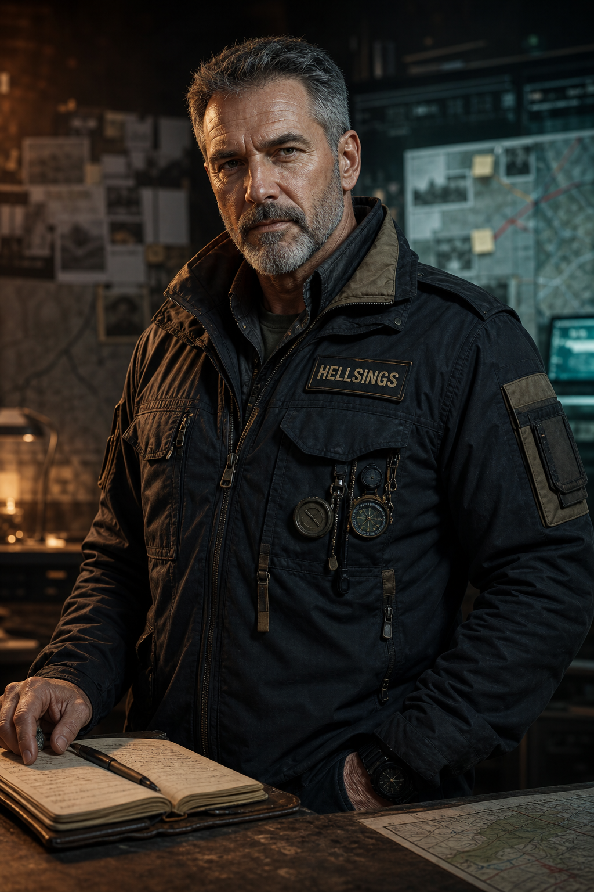
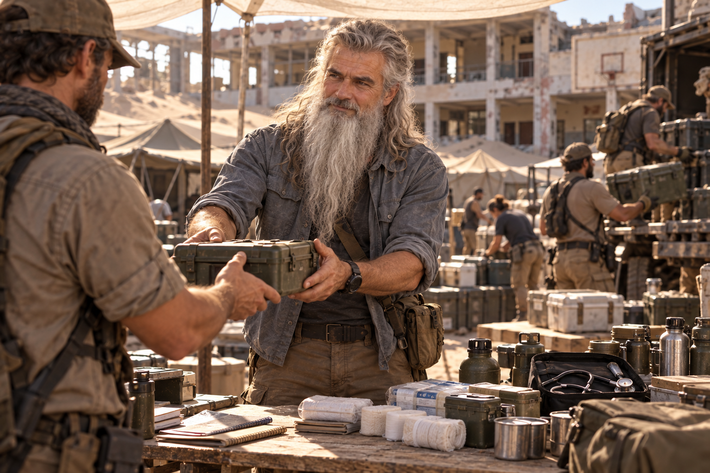
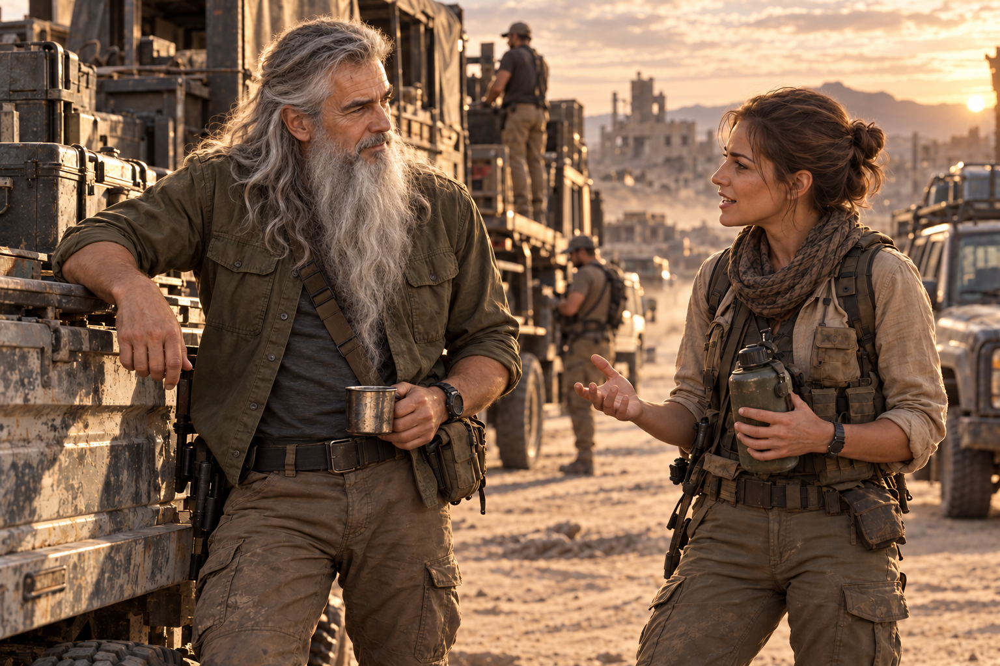
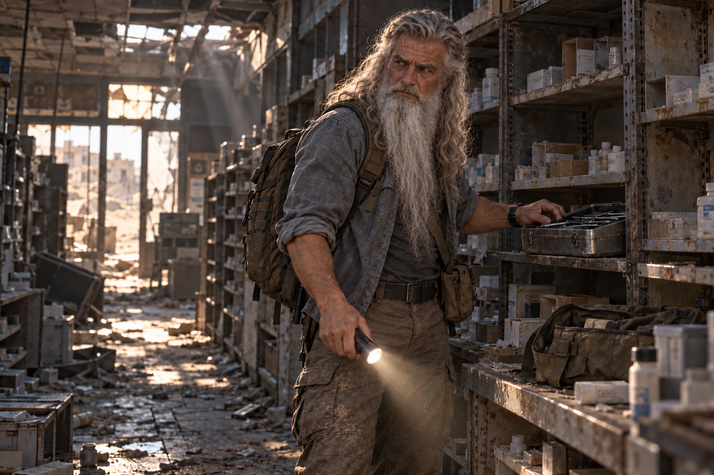
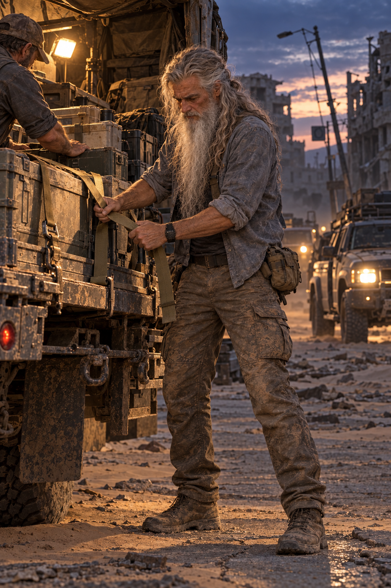

FBI
Parceiro de Jack no FBI.
Antigo parceiro de Jack no FBI. Veterano e rastreador dos Hellsings. Seu nome permanece no bunker, mesmo depois que o mundo perdeu os recursos necessários para salvá-lo.

Brian e Jack foram parceiros no FBI. Brian também integrou os Hellsings como veterano e rastreador. Era o integrante mais velho da equipe.
Os registros preservam esses pontos de sua trajetória, sem fixar datas ou operações específicas.
Parceiro de Jack no FBI.
Veterano da equipe, identificado como HLS-09 no arquivo de comando dos Hellsings.
Uma perda causada pela doença e pela falta de medicamentos.
Brian lutava havia muitos anos contra uma doença. Depois do colapso, os medicamentos e recursos necessários deixaram de estar disponíveis. Mesmo com o conhecimento de Alice, não foi possível salvá-lo.
A memória da equipe registra sua luta contra a doença e a perda dos recursos que antes a mantinham sob controle.
Retratos e cenas de campo preservam Brian em diferentes contextos. As datas e operações não estão identificadas.




